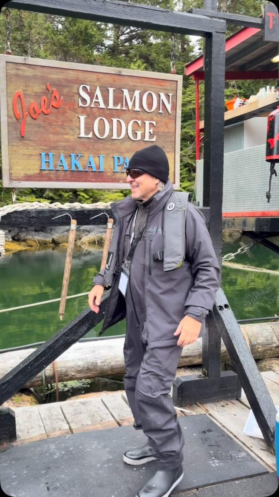
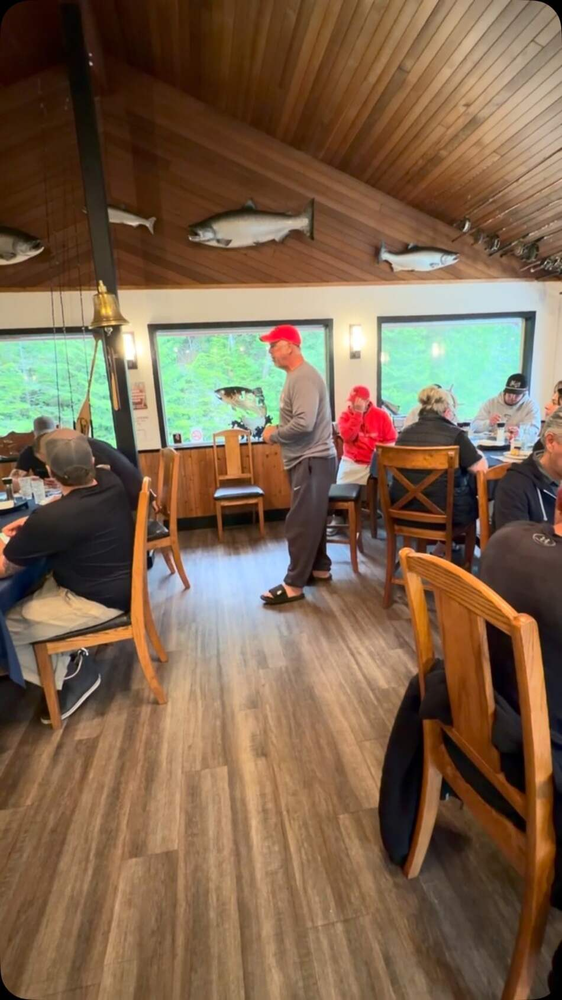
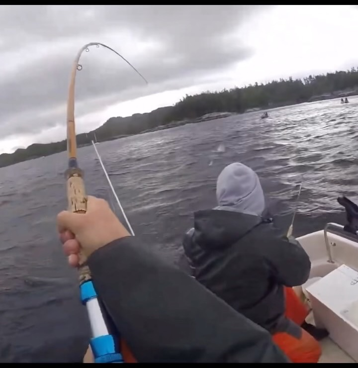
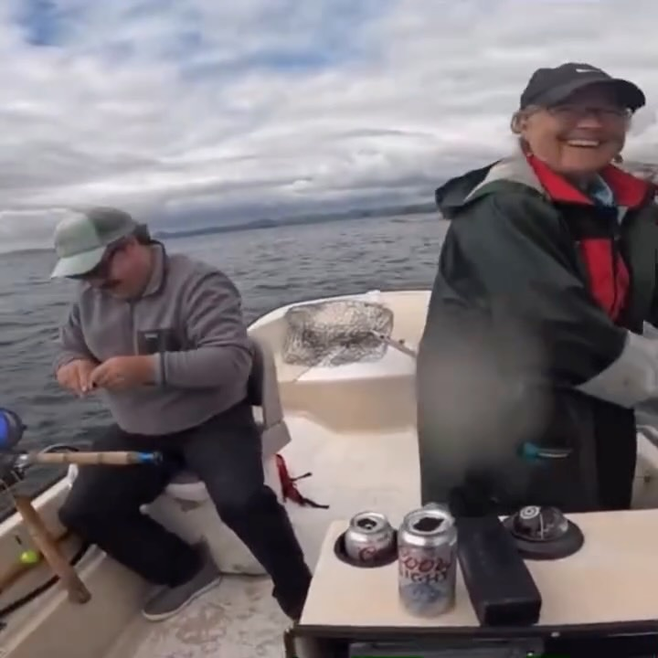
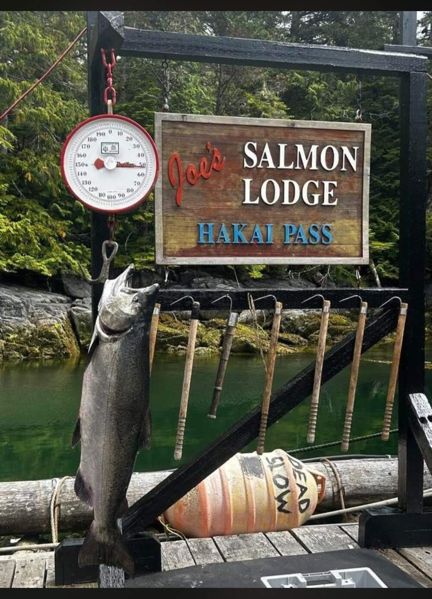
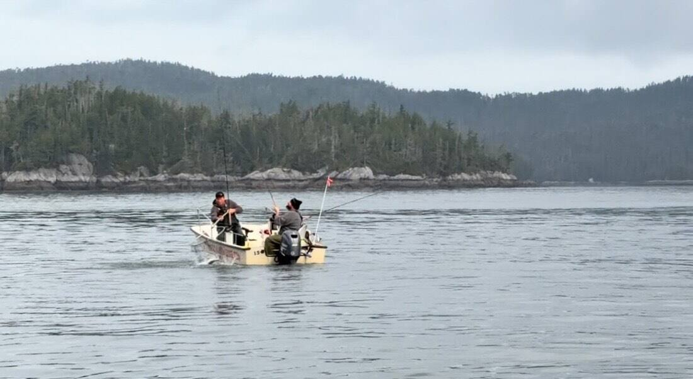
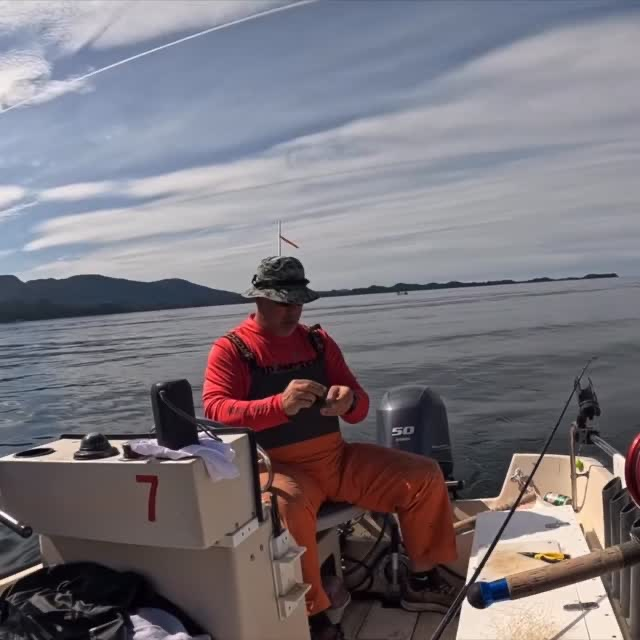
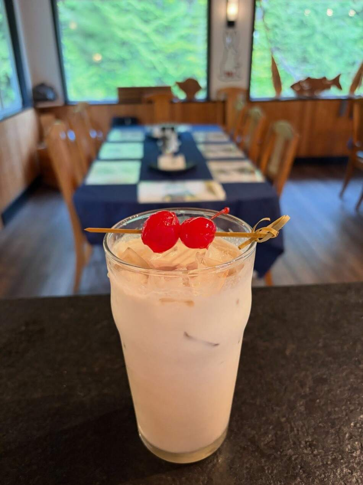

Self-guided on the central coast, 15–21 August. A heatwave year — the standard advice will cost you fish. Here is what to do instead.
Built for our crew flying in 15 August — everything you need before wheels-up, and the on-the-water reference once you’re there.
Destination: Joe’s Salmon Lodge, a floating barge lodge in Hakai Pass, Calvert Island, BC · Pacific Fishery Management Area 8, Subareas 8-1 / 8-2 · US resident, cross-border rules apply.
New to this page? Read the one-paragraph version below, then do two things this week: Section 2 (licence, salmon stamp, PCOC — none can be bought at the lodge) and Section 11 (the before-you-fly checklist). Everything else — spots, tactics, bait, bottomfishing — reads fine on the plane. The Film Room page is the pre-trip homework: there’s no internet at the lodge, so the videos only work before you leave.
There is no cell service at the lodge — save both PDFs to your phone before you fly.
- Field Guide (PDF · 4.1 MB) — the full guide: rules, spots, tactics, packing, and the before-you-fly checklist.
- Film Room (PDF · 1.7 MB) — the video syllabus with links; watch the four essentials while you still have internet.
Better still: add this page to your phone’s Home Screen — after you open it once, the whole guide, map and checklists included, works with no signal.
2026 is not a normal year at Hakai, and the standard advice will cost you fish. A marine heatwave larger than the 2013–15 “Blob” is running 2–3 °C above normal, which has almost certainly pushed chinook deeper than the 60–90 ft everyone fishes while leaving coho shallow — so you must cover two layers at once. Pinks are forecast abundant and will tax every hour you don’t design against them. Coho is your primary target and is growing through your window; chinook are fewer but at their peak average size. Halibut is the worst season in 102 years of record — one fish, 112 cm maximum — so lingcod is your bottomfish play. And the folklore that chinook are closed until 15 August is a Rivers Inlet rule that does not apply to you: chinook are open at 2/day for your whole trip.
The seven things that will actually decide this trip
- Buy one guided day, early. In a year when the standard depth advice may be wrong, six hours with someone who knows what is working this week resolves nearly every uncertainty in this document.
- Probe deep for chinook and do not stop at 120 ft. Find the thermocline, find the bait, fish at or just below it, and bracket every event. The traditional “fish shallow” wisdom still governs coho — do not let it stop you testing 150 ft for springs.
- Run two layers at once — chinook deep on the ball, coho shallow on a high stacker. It is the only way to cover a stratified column with two riggers.
- Design your gear against pinks: bigger, greener, deeper, faster. Otherwise they will eat your week one re-bait at a time.
- Fish structure, tide lines and bait balls — never open water. Patchy bait means concentrated fish. Let the birds do your searching.
- Brine bait every night, check the roll every fifteen minutes, and plan each day around tide and the wind clock. In a warm year the pre-dawn hour is worth three hours of mid-morning.
- Wear the PFD, keep a real float plan, and call out every whale blow. The whole self-guided proposition rests on nothing going wrong — and in peak humpback season with gear 130 ft down, “nothing going wrong” takes active effort.
◉ From the lodge’s Instagram · as of 28 July
Late July at the lodge
Real posts from the lodge’s own account, @onlyatjoes — captions quoted verbatim, all from July 2026. The freshest read on your water, two weeks before your dates.




What those posts actually tell you
- Tyee are on the grounds. Two 30 lb-class chinook celebrated on 24 and 25 July — the “fewer fish, but peak size” read in Section 1 is not theoretical.
- The Gap is producing chinook — by name, in the last week of July. It is on the map in Section 3.
- Big coho are in (“Big Coho” photographed 16 July) and growing daily — your primary target confirmed.
- The camera shows grey, chopped water as often as sun. Pack for the boat in Section 10, not for the brochure.
Cover frames shown for video posts; captions quoted verbatim from public posts by @onlyatjoes (Joe’s Salmon Lodge). Re-read the account’s last three weeks yourself the night before you fly — Section 11 has the checklist.
Section 01 · Season intelligence
What is actually happening this year
The honest headline: 2026 has been a slow season on the BC central coast — below average on paper for every species you care about except pinks. That is not a mood; it comes from a continuous, dated public record of angler reports (December 2025 → late July 2026), corroborated by DFO’s own preseason outlook.
The in-season record
A single public thread on the SportFishing BC forums provided the only continuous dated account of central-coast fishing this year. Its arc is consistent and unflattering:
The reason: a marine heatwave
That late-July “water warm” observation came from an angler with no access to oceanographic data. Independently, the satellite record shows the NEP25A marine heatwave, active since May 2025, larger by area than the 2013–15 “Blob,” which at its peak ran 2–3 °C above normal — and NOAA is now under a declared El Niño advisory, with a very strong event forecast by winter.
Two entirely independent sources — one anecdotal, one instrumental — pointing the same direction is the strongest signal in this guide. Everything in Section 4 follows from it.
The forecast — and why it’s less damning than it looks
Three things keep that table from being as bleak as it reads:
- DFO explicitly labels coho in Areas 7–10 “data deficient.” Hakai is Area 8. The stocks you will fish among are essentially unassessed — one conservation organisation characterised it as DFO fishing blind on the central coast. A below-average rating on an unmeasured stock is weak evidence in either direction.
- More important: Hakai is a migration corridor, not a resident fishery. The fish moving past your boat originate anywhere from Washington to Alaska. Corridor catch rates decouple substantially from local escapement outlooks — which is precisely how a below-average regional forecast can coexist with an excellent week of fishing.
- The pink forecast is genuinely strange and worth noting: 2026 is the historically subordinate even-year broodline on the central coast, yet DFO forecasts abundance. Whatever drives that is not captured by the broodline model.
A 2025 peer-reviewed study of 52 North and Central Coast coho populations found a 37% decline in abundance since 2017, a 32% decline in spawners, and 40–69% of populations below their biological reference points. Productivity in the Hecate Lowlands is down 74%. The authors attribute this to marine heatwaves rather than fishing pressure. This is the long-run context for your trip, and it is not encouraging.
What is in front of you, 15–21 August
Your window sits precisely on the chinook-to-coho handoff, which is a genuinely good place to be.
Nothing you want has failed to arrive. That is the single most useful fact about your dates.

Section 02 · Regulations
What you may keep
A widely repeated claim holds that chinook retention is closed from “Wadhams north to the head of Rivers Inlet” until 15 August. Because your trip begins around 15 August, this was the highest-stakes question in the entire project. It is a Rivers Inlet / Area 9 rule and does not apply to Hakai Pass. Chinook retention at Hakai is open at 2 per day for your entire window.
Two corrections to the folklore, worth knowing if you ever fish Rivers Inlet: the actual 2026 closure runs through 17 August and reopens on the 18th, not the 15th — anyone fishing inner Rivers Inlet on the folklore date would be retaining illegally by three days. And “Wadhams” appears in no DFO document; the legal boundary is a subarea list (9-3 through 9-9). The landmark is angler shorthand repeated until it sounds official.
Source: DFO Fishery Notice FN0720, issued 15 July 2026, Variation Order 2026-RFQ-304.
Limits — Areas 8 and 108
- The aggregate salmon limit is 4 fish per day, all species combined. With pinks forecast abundant, this bites harder than it sounds — four pinks is a limit, and your rod is done for the day. Every pink in the box is a chinook you cannot take home.
- The lodge’s own FAQ conflicts with DFO. As of late July 2026, the lodge’s FAQ listed rockfish at 5 per day and chinook as “4 per trip.” DFO says rockfish 3 per day and chinook 2 per day against an annual cap of 10. DFO governs. Fishing to the lodge’s published numbers would put you over on rockfish.
- Halibut possession crossing the border is one fish. Not two. Routinely misunderstood — and it is a customs problem rather than a fishing one.
The Rockfish Conservation Area problem
The West Calvert Rockfish Conservation Area sits immediately at Hakai Pass, inside Subareas 8-1 and 108-1. It is the single highest inadvertent-violation risk of the trip, because you can drift into it with no visual cue. Ask the lodge to show you the boundary on the chart on arrival evening, and load it into the boat’s GPS before you leave the dock the first morning. It is drawn approximately on the Section 3 map.
Carry and use a descending device for released rockfish. Releasing a barotraumatised rockfish at the surface kills it, and use of a descender is a mandatory condition of licence in BC.
Licensing — do this before you fly
A non-resident adult annual tidal waters licence is $124.41 CAD for the 2026–27 licence year, plus the mandatory Pacific Salmon Conservation Stamp at $7.39 (both pre-GST). Buy online through DFO’s National Recreational Licensing System. There is no vendor at Hakai. The five-day licence at $38.18 will not cover a seven-day trip, so the annual is both simpler and, for your duration, close to unavoidable.
Separately and equally non-negotiable: you must hold a Pleasure Craft Operator Card to operate the lodge’s boats. No card, no boat, no self-guided trip. Print your licence, save a PDF to your phone, and bring the PCOC physically.
Bringing fish home
Fish must be packaged with skin on and tail attached for species identification. Halibut may be in a maximum of seven pieces, with the tail and pectoral fin left on one fillet. One name per package — and if anyone in your party carries another angler’s fish, that requires a signed authorisation letter. Your possession limit is the ceiling crossing the border, which for halibut means one fish.
Declare all fish to US Customs. Carry your BC licence and catch record with the boxes — chinook (including each fish’s overall length) and halibut must be recorded on the licence the moment they are in the boat. Sport-caught fish for personal consumption is entirely routine; undeclared fish is not.
Section 03 · The water
Spots, tides, and the daily shape
How Hakai fishes, in one paragraph
Hakai in August is a migration corridor, not a resident fishery. Fish are moving through, hugging structure, and following bait pushed by tide. The whole strategy reduces to a single sentence: find the point or reef that has current on it, find the depth where the bait is on your sounder, and put your gear there. Tides push feed around reefs and rocky points; focus on feeding patterns rather than bottom structure.
The verified spots
These names appear across multiple independent BC sources and can be relied upon.
Several place names in circulation could not be sourced to Hakai Pass in any fishing publication, lodge site or forum: Watch Rock, Starfish, Gough Rock, Ward Channel, Breaker Pass, Serpent Point, Surf Islets, Triquet, Kildidt, and Nalau Passage. Several of these — Nalau Passage, Kildidt, Triquet, the Serpent Group — are real charted features in the right neighbourhood, and lodges may well fish them. We simply could not find a published source stating what they produce, and inventing that would be worse than admitting the gap.
One is almost certainly an error: “Blackney” is likely a confusion with Blackney Pass, which is in Johnstone Strait near Telegraph Cove — roughly 200 nautical miles away. Do not go looking for it.
The fix: email the lodge before you fly and ask for their current hot-spot list with GPS waypoints, and whether they will pre-load them on the boat. Most self-guided lodges will.
Tides
There is no CHS tide station named “Hakai Pass.” Use Addenbroke Island, station 08860 (tides.gc.ca/en/stations/08860), the nearest official prediction station at about 22 km, and cross-check against Namu, station 08870. Note that CHS lists Addenbroke as a temporary station not currently operational — it still publishes predictions, but sanity-check them.
Your whole window is below — and in the PDF, so it is on your phone even with no signal. Laminate a printed copy for the boat if you like paper. The lodge will have a tide book; get it in your hand the first evening, cross-check it against this table, and write each day’s highs and lows on tape on the dash every morning.
Addenbroke 08860 — highs, lows and light, 14–22 August
| Day | First light | Sunrise / set | Tides — PDT · height in m above chart datum |
|---|---|---|---|
| Fri 14 Big | 05:38 | 06:16 / 20:57 | H 02:17 4.6 · L 08:51 0.4 · H 15:04 4.4 · L 21:04 1.1 |
| Sat 15 | 05:40 | 06:18 / 20:55 | H 03:03 4.4 · L 09:27 0.6 · H 15:39 4.4 · L 21:49 1.1 |
| Sun 16 | 05:42 | 06:19 / 20:53 | H 03:50 4.2 · L 10:02 0.9 · H 16:15 4.4 · L 22:35 1.1 |
| Mon 17 | 05:43 | 06:21 / 20:51 | H 04:38 3.9 · L 10:37 1.2 · H 16:51 4.3 · L 23:22 1.2 |
| Tue 18 | 05:45 | 06:22 / 20:49 | H 05:28 3.6 · L 11:13 1.6 · H 17:29 4.2 |
| Wed 19 | 05:47 | 06:24 / 20:47 | L 00:16 1.3 · H 06:24 3.3 · L 11:53 2.0 · H 18:13 4.0 |
| Thu 20 | 05:49 | 06:26 / 20:45 | L 01:18 1.4 · H 07:33 3.0 · L 12:42 2.3 · H 19:06 3.8 |
| Fri 21 | 05:51 | 06:27 / 20:43 | L 02:32 1.5 · H 09:17 2.9 · L 13:56 2.5 · H 20:12 3.7 |
| Sat 22 | 05:52 | 06:29 / 20:41 | L 03:51 1.5 · H 10:59 3.0 · L 15:32 2.6 · H 21:26 3.7 |
CHS predictions for station 08860, retrieved 30 July 2026; cross-checked against Namu 08870 — agreement within 7 minutes and 0.1 m. First light is civil dawn computed for the lodge’s position; times are PDT. The biggest exchange of your window is 14 August (4.2 m range) — the strongest current window; the back half of the window is neap, with small exchanges.
One distinction that matters more than any other: tide height is not tidal current. What actually fishes at a place like The Gap is current, which lags the height tide — often by an hour or more in a constricted passage. Learn the lag empirically on day one by noting when the rip actually starts running versus the predicted high or low. That offset will hold all week and is worth more than any lure in your box.
Which tide stage, which structure
Plan the day around the tide, not the clock. On arrival night, look at the week’s table and identify, for each day, the two biggest current windows and which of them falls in the dawn or dusk light window. Where big current overlaps low light, that is your chinook window. Be on the best point you can reach, gear down, with fresh bait, ten minutes before it starts. Everything else in the day is filler.
The daily shape, and the discipline that matters
For unguided anglers the failure modes are well understood and entirely avoidable. Spend roughly 80% of your time in known productive areas — exploration is a tenth-trip luxury, not a five-day one. Give each spot one to two hours before moving; boat-hopping between marks is the classic self-guided mistake, where you spend the tide window running instead of fishing. And maximise time on the water: the angler who leaves at 05:00 and returns at 20:00 will out-fish the better angler who fishes 09:00 to 15:00.
- Dawn to 09:00 — the primary chinook window. Odlum or the nearest big-name headland with current on it. Deep gear.
- Mid-morning — if chinook shut off, move up the water column and switch to coho mode at Barney, Kelpie, or the kelp edges.
- Midday, or whenever the wind builds — duck into West Bay or Dublin Point and bottomfish. This is the correct use of the windy part of the day: you are sheltered, and the tide is often near slack, which is when halibut fish best anyway.
- Evening, 17:00 to dark — second chinook window back on the points. Often the best bite of the day, and the wind usually drops.

Section 04 · Tactics
The 2026 depth problem
This section is the reason the guide exists. Everything here departs from standard Hakai advice, deliberately, for a reason documented in Section 1.
The apparent contradiction, and its resolution
Local Hakai sources are emphatic and consistent: fish shallow, rarely more than 20 pulls, because all salmon species primarily occupy the upper water column in summer. A “pull” is roughly two feet of line, so 12–20 pulls on a mooching weight puts bait around 15–30 ft down. That is shallow, and the most common visiting-angler mistake at Hakai in a normal year is fishing 100 ft down because that is what you do at home.
The heatwave analysis says the opposite: probe to 150 ft. Both are correct, because the advice splits by species rather than being replaced.
Chinook are the most temperature-sensitive Pacific salmon in salt water, preferring roughly 8–12 °C and feeding poorly above about 14–15 °C. In a normal Hakai August the top 40–60 ft sits comfortably in that band. With the heatwave running 2–3 °C above normal, that surface layer may now sit at or above the top of their range — so chinook drop below the warm layer and hold near or under the thermocline, coming up to feed only in the coldest, darkest part of the day.
Coho tolerate warm surface water and hunt in it. They stay shallow. So the traditional Hakai wisdom remains exactly right — for coho — while being potentially 60 to 90 feet wrong for chinook. You now have to cover two separate layers simultaneously, which is precisely what stacked downriggers are for.
The bait behaves the same way, and this is the more important half. Herring and needlefish also drop, and in a warm stratified summer the water column stops being uniformly productive. Instead of a broad scattering of feed you get thin, dense, patchy concentrations stacked at the thermocline or in cold-water upwellings off points and reefs. That is the entire game: find the cold, find the bait, find the chinook — in that order.
The probing plan — spend your first morning on this
Do this deliberately, before you commit to fishing hard. It will cost 60 to 90 minutes and it will make the other five days.
- Start at the normal-year depth so you have a control. Put gear at 60 ft and 90 ft on a stacked rigger over a known productive point. Fish it 30 to 40 minutes. If it produces, the heatwave has not reshaped your local water and you can use the standard table.
- If nothing, step down in 20 ft blocks and go deeper than feels sane. Run the pair at 100/120, then 120/150, then if bottom allows, 150/180. Give each pair 20 to 30 minutes. Do not stop at 120. In a strong heatwave year, 130–160 ft is a completely normal chinook depth on this coast, and it is the depth visiting anglers refuse to try.
- The moment anything happens — a strike, a knock-off, a chewed bait, a marked fish — stop stepping and bracket it. One rod 15 ft above the event depth, one 15 ft below, then narrow. The productive layer may be only 20 to 30 ft thick. If you are 30 ft off you will catch nothing all day and conclude the fishing is bad.
- Re-probe at every spot change and at least once midday. The thermocline is not flat — it tilts, upwells against points, and moves with the tide. A depth that produced at Odlum on the flood may be 30 ft wrong at the same spot on the ebb.
- Write it down. Keep a card in the boat: time, spot, tide stage, depth, result. By day three you will have the week’s pattern in your own handwriting — which is precisely the knowledge a guide would otherwise have sold you.
Reading the sounder
Your Whaler has a fish finder. In a warm year it stops being a convenience and becomes the primary instrument.
- Turn auto-gain off and run manual sensitivity, turned up. On auto, the sounder suppresses exactly the soft returns you need. Increase sensitivity until you get light noise, then back off one notch.
- The thermocline appears as a faint horizontal band — a haze layer at constant depth across the whole screen, not a target. It shows because the density change reflects a little sound. Turn gain up until you can see it and note its depth. That number is the most useful number on your boat.
- Bait looks different in a warm year — not broad shallow clouds but tight dense balls or thin ribbons, sitting at or just below the thermocline and often glued to a point, reef edge or upwelling. Smaller and further apart than you expect.
- The productive layer is where three things coincide: at or just under the thermocline, bait present, and larger individual arches below or at the edges of the bait. Put your deep rod at or just below the bait ball, never above it — chinook feed upward.
- Cold-water upwellings are your friend. Where strong current hits a steep point or reef and lifts deep water, the whole pattern compresses shallower. These are the exception where chinook may still be at 50–70 ft this year. Look for strong current on steep structure, visible boils, and a thermocline that suddenly bends upward. Mark every one.
Bites cluster at one depth rather than scattering — two or three events within 15 ft of each other. The bait marks and fish marks sit at the same depth. And critically: moving 20 ft up kills it, and moving back down restores it. Test that deliberately once you think you have it. If it does not fail when you leave the layer, you have not actually found a layer.
The core rig: working two layers at once
In a heatwave year chinook and coho are in genuinely different water — chinook at or below the thermocline, perhaps 110–150 ft; coho at 20–40 ft or on the surface. You cannot chase them alternately and do well at either.
Rod 2 (stacker): coho — clip 80–100 ft up the cable, gear at ~30–40 ft. Cut-plug herring behind a flasher, 4½ ft leader.
Rod 2 (stacker): optional second coho rod at 20–25 ft, or leave empty to keep the deck manageable.
Set the stacker unusually high. In a normal year you stack 15 to 25 ft above the ball. Here you may stack 80 to 100 ft above it to reach coho water from a chinook-depth ball. That is unusual and perfectly workable.
Speed is the compromise. Chinook want 2.2–2.8 mph, coho 2.8–3.5. Run 2.6–2.9 mph and let deliberate S-turns give each species its moment: on the inside of a turn the gear slows and drops, favouring chinook; on the outside it speeds and rises, favouring coho. Watch which rod fires on which part of the turn — that is the fish telling you which way to commit.
When one layer clearly wins, commit to it. The two-layer rig is a search rig. Once you have had three coho and no springs, put both riggers shallow and fish coho properly at 3.2 mph. Do not split the difference all day out of indecision. Coho are the reliable fish in a warm year — two hours of good coho beats six hours of theoretical chinook.
Leaders
| Gear | Species | Leader | Line |
|---|---|---|---|
| Bait | Both | 4½–6 ft | 30–40 lb mono |
Use mono for bait, where you want a softer, more forgiving roll. The rule to internalise: short leader means tight imparted action; long leader means loose natural action.
Proven central-coast flashers: Gibbs Twisted Sista Highliner, Bon Chovy and STS; O’ki Big Shooter in Purple Phantom, Green Footloose, Green Onion Glow; Hot Spot Silver Betsy and Chartreuse Anchovy.
Section 05 · The pink problem
Fishing through pinks
DFO rates Areas 6/7/8 pinks abundant for 2026, and the late-July report confirms heavy pinks on the grounds. In a guided boat a guide absorbs this invisibly — he re-baits, he moves, he changes gear. Self-guided, every pink costs you a re-bait, a re-set, and five to ten minutes of the tide window you actually care about. Across six days that is hours.
Pinks are fine fish. They are simply not what you flew here for, and at 3–5 lb they will out-number and out-intercept everything else. They are small-mouthed, shallow-running, and strongly drawn to small pink and red gear moving at moderate speed in the top 40 ft — which describes almost every classic summer salmon setup. The good news: that makes them avoidable by design. You have four levers.
Calling the fish inside ten seconds
The ten-second rule: if it is light, buzzy and coming at you, it is a pink. Do not baby it. Rod low, wind steadily, net or release, and get that rod back in the water. Save your careful drag work for a fish that sounds.
Fish structure, never open water
Patchy bait is the defining feature of a heatwave year and it has one clear consequence: the fish are concentrated, not spread. In a normal August you can troll a general area and intercept fish. In 2026, trolling general open water is how you blank. In priority order:
- Tide lines and rips — the single most productive feature in patchy conditions. Look for a visible line of foam, debris, kelp, or a colour and texture change. Troll along the line on the up-current side, parallel and 20 to 50 yards off. Work it repeatedly.
- Current-swept points with a back-eddy — the eddy is a conveyor belt. Fish the seam between fast water and eddy, not the middle of either.
- Reef edges and the down-current side of isolated rocks — high value this year because upwelling brings cold water up.
- Funnels at mid-flood and mid-ebb, when flow is maximal.
- Kelp edges for coho — the outside edge, not over the top.
- Any bait ball on the sounder. In a patchy year a bait ball is not a nice-to-have, it is the target. Waypoint every one.
Birds and whales are your bait finder. Working gulls, murres and auklets mean bait on the surface. A lunge-feeding humpback means a large concentration — fish near it at a legal distance, never close to it. In a year when bait is hard to find, letting the birds search for you is the highest-value habit you can build.
This does slightly conflict with the “give each spot one to two hours” discipline. Resolve it this way: give each structure one to two hours, but only structure that has current on it and preferably bait under it. If you pull up on a point at slack water with a blank sounder, do not burn 90 minutes there out of obedience to a rule. Go find moving water.
Section 06 · Bait
Bait
Bait is supplied by the lodge, and at Hakai trolled cut-plug herring is the method: one of the most effective ways to catch salmon in Hakai Pass — the natural scent and spinning action of the bait attract feeding fish. A large 6–7 in cut-plug herring on a tandem-hook rig is the standing method in the published Hakai-specific guides (Gibbs Fishing’s Hakai Pass guide; Hakai Land & Sea’s fishing tips).

Cutting and brining
Cut the plug with the knife at about 20°, taking the head off at about 30° to the body. Those two angles are the entire mechanism of the roll. Do the cutting at the dock before departure, not bouncing around in a rip. Rig two 3/0–4/0 octopus hooks about 3 in apart — the front hook drives the roll, the trailer is what usually hooks the fish.
Brine every night. This is the highest-return ten minutes of your day and exactly the kind of thing that separates guided from unguided results. Dump bait into a sealable bin, cover with coarse pickling or kosher salt, and mix thoroughly; salt pulls moisture and hardens the bait so it holds its roll far longer. Add a tablespoon of powdered milk to toughen the skin and add sheen. Frozen herring needs about twelve hours to thaw and brine, so set tomorrow’s bait tonight. Take two to three packs per day in the boat and keep them cold and in the brine all day.
Always check the roll in the water before you send it down. If it does not roll, replace it. Hold the bait beside the boat at trolling speed — you want a tight, fast, consistent barrel roll, roughly two to three rotations per second, not a wobble or a helicopter.
Then check it every 10 to 15 minutes. A bait that stopped rolling twenty minutes ago has been fishing for nothing. In a self-guided boat with nobody else watching, this discipline is the guide.
Diagnosing: no roll means not enough angle on the head cut. Helicopters means too much curve or too much bend from the trailer. Rolls then stops means the bait is soft — a brining failure, replace it. Rolls one way then the other means the head cut is not flat; recut.
Section 07 · Bottomfishing
Bottomfishing
2026 is the worst halibut season in the International Pacific Halibut Commission’s 102 years of record. The coastwide limit is the lowest the IPHC has ever set at 29.33 million lb; your area was cut a further 7.2%. The practical effect for you is one fish per day, one in possession, maximum 112 cm. The 100 lb Hakai trophy halibut is a mandatory release.
Lingcod is the opposite story. The 2025 assessment puts the stock at 1.12 times its unfished biomass, with greater than 0.99 probability of being in the Healthy zone and fishing mortality below every reference rate. Lingcod is your bottomfish play this year. Plan around it rather than around halibut, and you will have a better trip.
Where and how
Hakai’s bottom water is shoals of 40 to 200 ft, notably at West Bay, Dublin Point and Airocobra. Halibut want flat-to-gently-sloping sand, gravel or mud adjacent to structure — not on top of the pinnacle. Find a rocky hump, then fish the flat 100 to 300 yards down-current of it, where the scent trail goes. Lingcod and rockfish want the structure itself: pinnacles, rock piles, sharp edges, the tops and shoulders of humps in 60 to 150 ft. Look for the edge where hard bottom (thick, dark, doubled echo) transitions to soft (thin, fuzzy). That edge is the halibut line.
Run the sounder while doing anything else. Every transit between salmon spots is a free bottom survey — waypoint every hump, edge and drop-off you cross. By day three you will have a private structure map that nobody else on the dock has.
Fish the hour either side of slack: less lead, straighter line, and a scent trail that stays put.
The rigs
Spreader bar for halibut: L-shaped stainless, 18 × 6 in or 12 × 6 in. Cannonball weight of 1.5 to 2.5 lb — correct weight is whatever makes your line drop straight down. Mainline 80 lb braid for zero stretch, so you feel a bite at 200 ft. Leader 90–150 lb mono, 12 to 36 in; halibut are not leader-shy, and a short 24 in leader keeps bait off the bottom and out of snags. Hooks: circle 14/0–16/0 or octopus 8/0–10/0. With circle hooks, do not set the hook — let the fish load the rod and simply start reeling. Bait: salmon belly plus octopus on the same hook is the classic — octopus stays on forever, herring brings scent. Ask the lodge to save your salmon bellies for use as bait on days three onward; it is the best halibut bait you will ever have and it is free.
Jigging: lift 12 to 18 in off bottom then drop to hit bottom — the flutter on the drop and the thump on the bottom are what call fish in. Deep Stinger and Point Wilson Dart jigs, 2.5 to 8 oz, in white, glow/chrome, blue/pearl and green/white. For lingcod specifically, the highest-percentage technique is a live or dead rockfish on a big single, or a large white or glow swimbait jigged just off a pinnacle top. Lings hit on the drop. A hooked rockfish coming up frequently gets grabbed by a ling — keep reeling steadily, do not stop, and have the net ready, because lings often let go at the surface.
Independent of any regulation, standard practice for a 17 ft open boat is to release anything over about 50 lb at the side rather than land it. A large halibut in a small boat can break legs, destroy gear and put someone overboard, and there is no guide aboard to manage it.
The 2026 legal maximum of 112 cm corresponds to roughly a 40 to 45 lb fish. The law and the safety limit land in almost the same place. Every halibut you may legally keep this year is one you can safely handle — which removes what would otherwise be the most dangerous judgement call of the trip.
If you do keep one — the sequence
Never boat a green fish. Ever. Get it alongside and keep it in the water. Harpoon or gaff it and take a line to a cleat so it cannot be lost or thrash free. Subdue it in the water with several solid strikes to the head, then bleed it in the water by cutting the gill arches. Only then bring it aboard, head first, straight into the fish box. Clear the deck first — rods away, feet clear, nobody between the fish and the transom. Have harpoon, bonker, cleat line, knife and gloves within arm’s reach before the fish is up. Do not shoot fish; a firearm in a small boat is a worse hazard than the halibut. And if in any doubt, cut the leader — a released halibut costs you nothing, while an ambulance from Hakai Pass costs you everything.
Section 08 · Seamanship
Seamanship and whales
You are on the exposed outer coast of British Columbia in a 17-foot open boat, hours from help, with no cell service and no guide. Treat this as the most important section in the guide.
The wind clock
The central coast summer pattern is highly predictable and should shape every day. Dawn to mid-morning is calmest; fog patches dissipate and northwest winds develop late morning toward noon. The sea breeze builds mid-morning and peaks mid-afternoon at commonly 10 to 25 knots, driven by the contrast between cold ocean and heated inland — at its strongest in June, July and August. Evening usually drops out again, often giving a beautiful last two hours.
The operating rule: do your exposed, outer, long-run fishing in the morning. Be back inside sheltered water by early afternoon. Fish the evening close to home. If you want to run to Spider Island, you leave at first light with a fixed early turnaround and no “just one more pass.”
A 15-knot westerly is nothing. A 15-knot westerly against a 3-knot ebb in Hakai Passage builds steep, short, breaking seas that will stop a 17 ft boat cold. Check the tide table before you check the wind forecast, and know exactly when the ebb starts.
Fog, navigation and radio
August fog on the outer central coast is common and can close in within minutes. Learn the boat’s GPS on day one, at the dock, in good visibility — how to drop a waypoint, start a track, activate go-to, and critically how to follow your own inbound track back out. That breadcrumb track is the single most valuable fog tool you have. Waypoint the lodge first, then every hazard and every spot.
When fog closes in: slow to a speed at which you could stop in half your visibility, turn on nav lights, sound the horn, get out of transit lanes, and post a lookout at the bow whose only job is listening. Do not run fast on GPS in fog — GPS shows where you are, not the other boat, the deadhead log, or the drifting kelp mat. Carry a handheld compass and know the rough bearing home, because units fail and batteries die. Get a paper chart and mark the lodge and your spots.
VHF: monitor channel 16 all day, every day — not optional. Listen to the Continuous Marine Broadcast before leaving the dock and again mid-morning; ask the lodge which weather channel receives best, since terrain shadowing means one may be unreadable and another perfect. Confirm the lodge’s working channel on arrival, program it, and do a radio check the first morning before you are out of sight. Write the mayday format on tape on the dash and say it aloud once at the dock: Mayday, mayday, mayday, this is [boat] three times, position, nature of emergency, number of people aboard, over.
Where not to go
- The true outside — the open Pacific face of the outer islands — in any swell over about 1.5 m or wind over 15 knots.
- Long open-water crossings in the afternoon. Queen Charlotte Sound is open ocean.
- Into a rip where water is standing up and breaking. Fish the edges, never the throat.
- Anywhere you cannot see hazards and have no track in. Kelp usually means rock at low water.
- Anywhere at all if you are the only boat out. If everyone else came in, come in.
- Never anchor in current in a small open boat. Anchoring by the stern or in a strong rip is a well-known way to swamp and sink.
Float plan and safety gear
Wear the PFD. All day, every day. In 10–12 °C water an unexpected immersion without flotation is quickly fatal, and you are in an open boat with nobody paid to notice. An inflatable auto-PFD is comfortable enough to actually wear.
Sign out with the lodge every morning — where you are going and when you will be back — and sign back in. Call in any change of plan on the lodge channel. Set a hard return time as a clock time; “sunset” is not a return time. Buddy up loosely with another guest boat and stay in radio contact on longer runs. Fuel discipline: one third out, one third back, one third reserve. Check weather again before every departure, including the one after lunch.
Carry: PFDs worn, throwable and heaving line, bailer, whistle on every PFD, in-date flares, tested VHF, compass, GPS, charts, anchor and rode, a spare kill-switch lanyard (losing it strands you), fire extinguisher, first aid kit, an extra warm layer and spare dry gloves in a dry bag, water and food for a fourteen-hour day, and a powerful headlamp for pre-dawn running.
Bring a handheld satellite communicator — an inReach or ZOLEO. Zero cell coverage, no guide in the boat, and hours from definitive medical care. It gives you an SOS button and a text link home. Nothing else on the packing list changes your outcome in a genuine emergency the way this does.
Humpbacks — August is peak
Humpback numbers on this coast have recovered dramatically and August brings daily sightings. The critical difference from orcas: orcas echolocate and actively avoid boats (they also carry their own rule — stay 200 m from all killer whales in these waters). Humpbacks do not echolocate while feeding and appear largely unaware of vessels. They will not get out of your way. Small-boat collisions with humpbacks on this coast are a documented, recurring problem and have killed people. A 40-ton animal surfacing under a 17 ft Whaler is not survivable in any meaningful sense.
Legal minimum approach is 100 m, and 200 m if the animal is resting or with a calf. Enforcement is real — convictions have been reported, with fines in the $2,000 range. Note that “approach” includes drifting or trolling toward them; you do not have to be driving at a whale to be in violation. Treat 200 m as your working number, because you frequently cannot tell whether there is a calf until you are already too close.
Post a lookout. In a two-person boat, whoever is not fighting a fish is watching the water — the single most effective measure. Slow to 7 knots or less in whale-likely water, and slow down in fog, glare and chop when blows are invisible. Learn the cues: a blow is a 10 to 15 ft column of vapour; a fluke going down means the animal is under for three to ten minutes and could surface anywhere within several hundred metres. And note the trap specific to this year — in a patchy-bait season you and the whales are hunting the same small number of spots. Expect them exactly where you want to fish.
You have downrigger cables in the water. A humpback that contacts one can be injured by it, rip the rigger off the gunwale, and capsize the boat. In order:
- Engine to neutral. Do not accelerate. Your instinct will be to run; running with cables down drags your gear across a whale.
- Get the balls up immediately. The priority action — and deep gear at 130 ft this year takes a long time to retrieve, which is precisely why you start the moment you see a blow, not the moment the whale is on you.
- Reel in the lines once the balls are clear.
- Only then move away at idle, on a course away from and parallel to the whale — never across its bow.
- If you are hooked to a fish, get the balls up anyway. The fish is not worth it.
- If a whale contacts your cable, cut it. Keep side cutters within reach of the helm. A cable is cheap; a trailing cable on a whale is a death sentence for the animal. Report it to 1-800-465-4336.
- If a whale is working bait where you want to fish, leave. Fish elsewhere for thirty minutes and come back. This is the whole answer and it costs you almost nothing.
Build the habit on day one: anyone who sees a blow calls it out with a clock bearing — “blow, two o’clock, three hundred yards” — and the driver comes off the throttle. Make it automatic before you need it.
The coast is wilder than the fishing alone suggests — guests photographed Vancouver Island sea wolves on the rocks in late July. They live almost solely off the ocean: crabs, shellfish, salmon and sea mammals. Watch the shorelines on your transits.
Section 09 · Fish care
Fish handling and getting it home
Your fish is worth more than your tackle. Handle it accordingly.
- Decide fast — keep or release. A release happens in the water without lifting the fish. A keeper gets acted on immediately.
- Bonk it. One or two firm strikes to the head, immediately. A thrashing fish burns lactic acid into the flesh and bruises it.
- Bleed it immediately. Cut the gill arches on both sides, then put the fish head-down in a bucket of seawater for a few minutes so it pumps itself out. A properly bled salmon has visibly better colour, flavour and shelf life. This step takes thirty seconds and is the difference between good fish and great fish.
- Get it cold and out of the sun, fast. Ice it or keep it in slush. Never leave fish on a hot deck.
- Log the fish. Mark your licence catch record for chinook and halibut immediately. This is a legal requirement, not a formality.
At the lodge, processing is included — cleaned, vacuum-sealed, flash-frozen and boxed, with boxes capped at 50 lb for airline compliance, per the lodge’s published information. Tell them how you want it cut on arrival, not on the last day: fillets or steaks, portion size, skin on or off, and whether you want collars, bellies and carcasses. Label boxes clearly with your name and flight, because a fleet of self-guided anglers shipping fish at once creates real mix-up risk. Photograph the boxes and labels before handing them over. Canning, candying and smoking are available through St. Jean’s Cannery by separate arrangement — worth doing with a portion of the catch, but arrange it before you leave the lodge.
Getting home: frozen fish flies as checked baggage, but confirm your airline’s per-bag fee and count on both legs — excess bag fees on multiple fish boxes add up fast. Boxed fish typically holds 24 to 48 hours in transit; plan the shortest route home and get it into a freezer the day you land. Bring packing tape and a Sharpie.
Section 10 · Packing
Packing list
The lodge supplies rods (10½ ft Daiwa mooching), reels, all tackle, bait, boots, life jackets, coolers, bonker, pliers and bait knives — per the lodge’s published information; confirm on booking. Staff clean, restock and fuel the boat each evening. There is no store on site.
The lodge no longer provides rain gear — bring your own. The clothing list below assumes it. Fit and dryness across six long days matter enormously to how much you actually fish.
Checkboxes are tappable and remember themselves.
Do not board the plane without these
Clothing — layers, not bulk
No cotton anywhere in the boat. Merino or synthetic base layers, two or three sets. Two mid-layers so one is always drying. Your own breathable taped-seam bib and jacket — bibs, not just a jacket, because you sit in spray. Your own insulated deck boots if you have comfortable ones; you stand in them twelve hours a day. A warm hat (yes, in August, at 05:00, at 25 mph) and a brimmed sun hat. A buff for sun and wind. Dry clothes to change into at the lodge, plus indoor shoes.
Gloves — bring three pairs, all different. Fingerless wool or neoprene for cold mornings; coated grip gloves for handling fish, bait and gear; thin sun gloves for bright days. A pair will always be wet. Three is not excessive.
Vision, skin, and seasickness
Polarized sunglasses — two pairs, on retainers. One will go overboard. Amber or copper for grey days, grey for bright. You cannot read water, spot bait, spot jumpers, or see your flasher without them. Add clear or yellow lenses for dawn running — eye protection at 25 mph in spray matters. High-SPF sunscreen and SPF lip balm; reflected UV off water is brutal.
Take seasickness seriously — if you are incapacitated, you are also the captain. A scopolamine patch is the most effective option; get it from your doctor beforehand and try it once at home first. Meclizine or dimenhydrinate are the over-the-counter fallbacks, taken the night before and the morning of. Take it before you feel sick — once you are sick, oral medication does not stay down. Day one on a big swell is the risky one; most people acclimate by day two.
Worth bringing even though tackle is supplied
Section 11 · Final prep
Before you fly
Buy one guided day, on day one or day two. It is roughly $600, split across the boat — confirm the current price with the lodge. It buys the actual current spot list, the depths that are genuinely working that week, and the tide-stage playbook — then you fish it yourself for the remaining days.
In 2026 this is worth more than it usually would be, for a specific reason: the standard depth advice may be badly wrong this year, and a working guide will know it on day one. Everything this guide flags as unverified gets resolved in six hours on the water.
Within 48 hours of departure — re-check these
In-season fishing regulations move by DFO notice, and everything below was verified in late July 2026. Two weeks is long enough for it to change.
Section 12 · Epistemics
Confidence, gaps, and what we could not learn
A guide that does not tell you which parts to doubt is not a guide, it is a sales brochure. Here is where this document is strong and where it is thin.
What we could not get, and why
The lodge’s own social feed is the freshest source there is — and the hardest to archive. The July posts and captions from @onlyatjoes are in the lodge report; everything else here is only as current as late July. So re-read the account yourself in the 48 hours before you fly — it is at most two weeks old when you land, and no other source is.
Two further dead ends worth knowing: the lodge’s own blog has no 2026 posts at all — the most recent is from July 2025, so it is not a catch-report source despite appearing to be one. And the Pacific Salmon Commission’s in-season status document could not be read, leaving the Johnstone Strait diversion rate — arguably the single most useful in-season number for a central-coast corridor fishery — unknown.

Fish the tide, watch the water, and ring the bell. The Paralyzer is waiting either way.